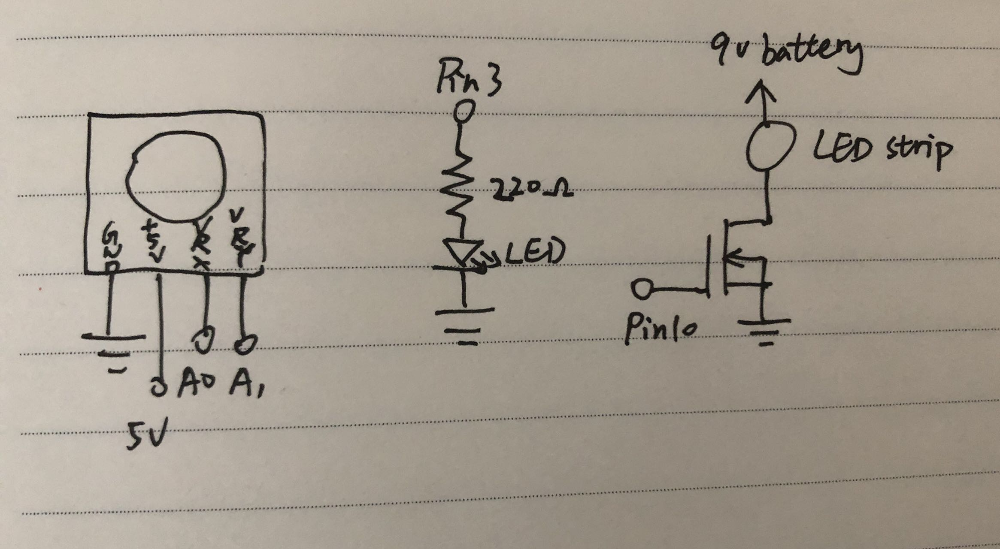

Final Project!
Project Concept/Motivation
I wanted to make a bed phone holder lamp.
It's brightness and ON/OFF can be easily controlled
so that I can read under light in bed.

The X-value of the joystick controls the brightness of the LED light strip.
The Y-value of the joystick controls the ON/OFF of the LED light strip.
When the LED light strip is turned on, it will automatically set to the previous brightness.
The red LED in the circuit is for early testing without the battery.
V = I * R
5V - 1.8V = 20mA * R
3.2V = 0.02A * R
R = 160Ω
Therefore, resistance cannot be smaller than 160Ω. 220Ω resistor works fine!
For safety and stability, I made enclosures for the circuit.
I packed the Arduino board, battery, and mini breadboard into a cardboard box
I also made a control panel for the Joystick, which is connected to the cardboard box.
I attached LED light strip into an empty napkin box, and fixed the box on the phone stand.

A GIF showing the operation of the prototype!
The link to the demo video: https://www.youtube.com/watch?v=ptiDxGyga7Y
The code that makes this work:
int brightness = 0; // initialize the brightness
void setup() {
Serial.begin(9600); // Initialize the serial
pinMode(10, OUTPUT); // Set up the LED output
}
void loop() {
int s1 = analogRead(A0); // read the x-value of joystick
int s2 = analogRead(A1); // read the y-value of joystick
// turn the xy value and the current brightness in to a readable format, and send it to serial
Serial.print("[");
Serial.print(s1);
Serial.print(",");
Serial.print(s2);
Serial.print(",");
Serial.print(brightness);
Serial.println("]");
if (s1 > 600) { // if the x-value of joystick is larger than 600
if (brightness <= 200) { // if the LED hasn't reached to maximum brightness
brightness += 50; // increase the brightness by 50
analogWrite(10, brightness); // light up the LED to the current brightness
}
} else if (s1 < 300) { // if the x-value of joystick is smaller than 300
if (brightness >= 50) { // if the LED hasn't reached to minimum brightness
brightness -= 50; // decrease the brightness by 50
analogWrite(10, brightness); // light up the LED to the current brightness
}
}
if (s2 > 800) { // if the y-value of joystick is larger than 600
analogWrite(10, 0); // turn off the LED
}
if (s2 < 300) { // if the y-value of joystick is smaller than 300
analogWrite(10, brightness); // light up the LED to the current brightness
}
delay(200); // wait for 0.2 seconds
}